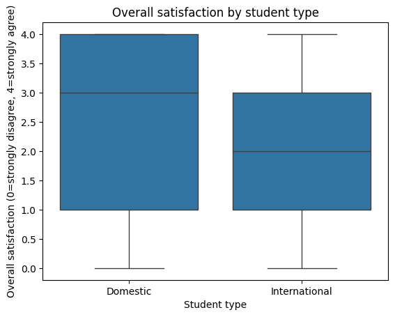
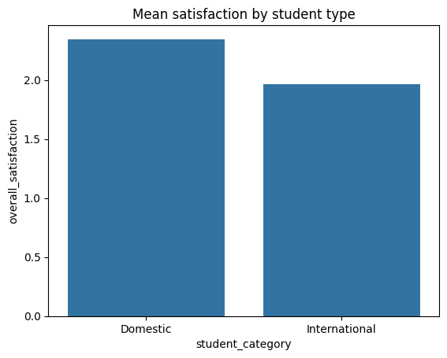
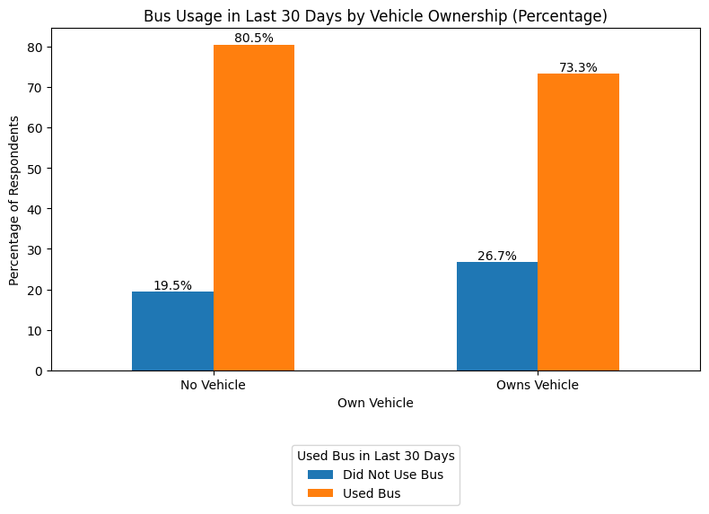

How satisfied are Purdue students with CityBus services — and what actually drives that satisfaction? An end-to-end research project from questionnaire design to statistical modeling.
CityBus is the primary public transit system serving Purdue University students in West Lafayette, Indiana. Despite being a critical service, student satisfaction data was fragmented and anecdotal.
This project aimed to quantify: How do service reliability, frequency, route coverage, and student demographics shape overall satisfaction with CityBus? And more specifically — do domestic and international students experience the service differently?
A three-stage research design combining primary survey collection, data cleaning, and multi-method statistical analysis.
Built a structured questionnaire in Qualtrics capturing demographics, usage patterns, satisfaction ratings (0–4 scale), and open-ended feedback.
Recoded variables, mapped categorical labels (domestic/international, vehicle ownership), handled missing values, and prepared analysis-ready datasets in Python.
Applied chi-square tests, one-way ANOVA, factor analysis, and ordinal regression to test hypotheses about satisfaction drivers.



No evidence that domestic and international students differ in satisfaction. The distribution of ratings appears similar for both groups, suggesting the service experience is consistent regardless of student origin.
Owning a personal vehicle does not significantly influence whether a student uses the bus. Both groups showed similar usage patterns (80.5% vs 73.3%), indicating CityBus serves a need beyond just lack of car access.
The frequency of bus usage is strongly associated with satisfaction levels. More frequent riders report significantly different satisfaction — suggesting that the experience of using CityBus regularly (reliability, wait times, crowding) directly shapes how students feel about the service.
No significant difference in how often domestic and international students use the bus. Both groups ride at similar frequencies.
Based on the finding that usage frequency is the primary driver of satisfaction, CityBus should focus on improving the experience for regular riders.
Since frequent riders are the most satisfaction-sensitive group, reducing delays and improving on-time performance would have the highest impact on overall ratings.
Crowding during peak hours likely degrades the regular rider experience. Adding buses during high-demand windows can directly improve satisfaction for the most engaged users.
Vehicle owners still use CityBus at similar rates — this is a voluntary ridership segment worth retaining through convenience, not necessity.
Since domestic and international students show no satisfaction gap, CityBus can maintain its current approach without needing demographic-specific interventions.